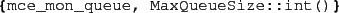
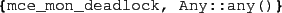

Most monitors are rather application specific, but there are
some generic ones implemented. Note also that in some situations
it may not be necessary to specify any monitor at all; the default
monitor is the always true one, but since the default setting
for the @fail_on_exit@ flag of @mce_opts@
is true, the model checker will verify that no process
is ever abnormally terminated.
Below we show the tuples naming the monitors, and their
respective arguments (to be specified in the @monitor@
field of @mce_opts@).
-

Checks that all queues contain at most MaxQueueSize elements.
-

Checks that there is at least one non-deadlocked process.
2010-07-05